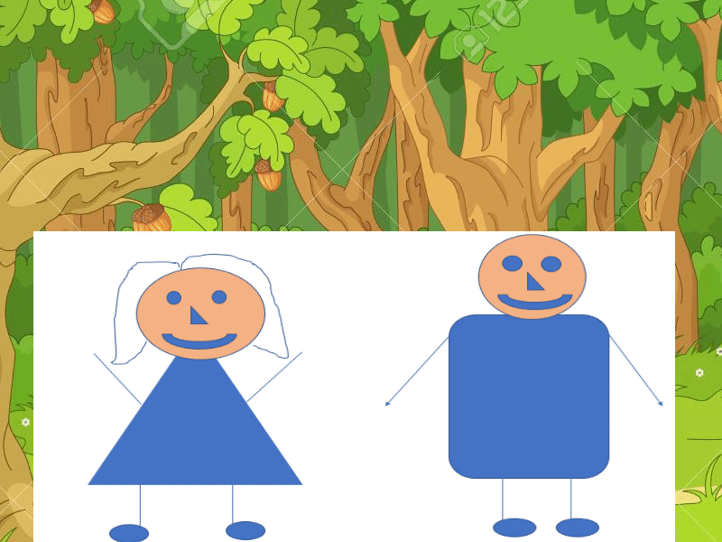

Parcial

Este trabajo aunque tenia cierto grado de sencille requeri el pensamiento en los pequenos detalles y por uno de estos pequenos detalles era probable quedarse atascado, pero con pensamiento critico se puede salir de ellos, tambien cabe aclarar que hay partes del algoritmo que no puede representar con las fotos del funcionamiento.